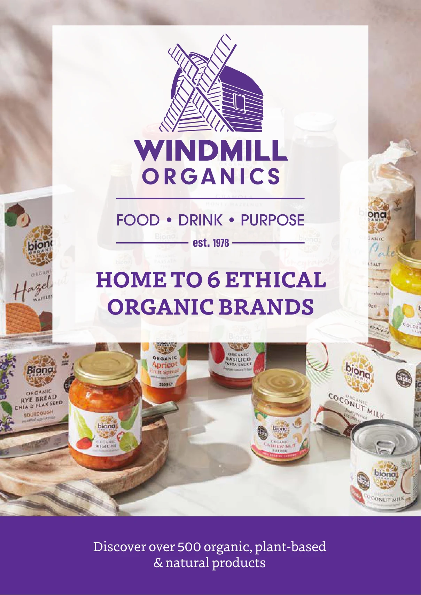
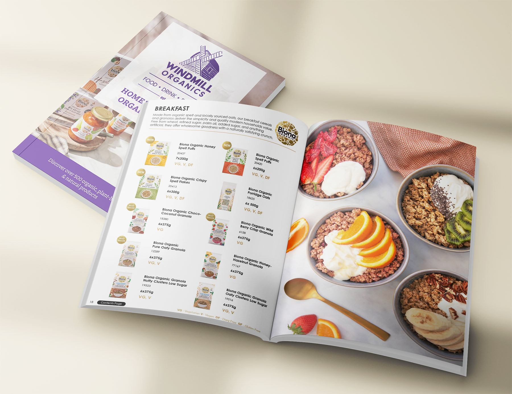
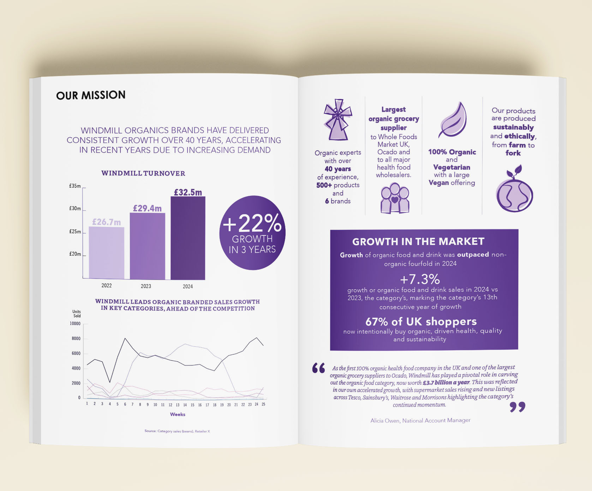

CASE STUDY / EDITORIAL DESIGN
Windmill
Organics
Catalogue.
Brand & Product Catalogue, Designed for Digital
I designed a 92-page company catalogue in InDesign, bringing together Windmill Organics’ full brand and product portfolio. The catalogue introduces the business, highlights its environmental contributions and gives additional focus to its main brand, Biona, before presenting products across the wider portfolio with key USPs, pack sizes and lifestyle imagery.
INTERACTIVE CATALOGUE / 92 PAGES

CLICK TO OPEN THE CATALOGUETurn pages using the arrows or your keyboard. Swipe on touch screens; select a page to enlarge it.
01 / CATALOGUE APPLICATION
Inside the
catalogue.
The catalogue combines brand storytelling with practical product information, using a consistent editorial system across category openings, product pages and business-focused spreads.

